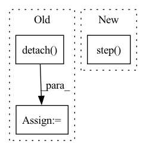

Pattern ID :28315

Before Change
//entropy loss
entropy_loss = -torch.mean(dist_entropy)
entropy_loss_value = entropy_loss.detach().cpu().numpy()
tot_loss = v_loss + entropy_loss + policy_loss
self.policy_optimizer.zero_grad()
After Change
policy_loss_value = policy_loss.detach().cpu().numpy()
self.policy_optimizer.zero_grad()
policy_loss.backward()
self.policy_optimizer.step()
//compute value loss
v_loss = F.mse_loss(curr_state_v, future_return_batch)
v_loss_value = v_loss.detach().cpu().numpy()
In pattern: SUPERPATTERN
Frequency: 3
Non-data size: 3
Instances
Fragment ID: 83595148
Project Name: x35f/unstable_baselines
Commit Name: 6c5f28faf8eed273f859610adbd71a0361d36112
Time: 2021-03-31
Author: 1621322691@qq.com
File Name: ppo/model.py
M Class Name: PPOAgent
N Class Name: PPOAgent
M Method Name: update(2)
N Method Name: update(2)
M Parent Class: BaseAgent,torch.nn.Module
N Parent Class: BaseAgent,torch.nn.Module
M File Name: ppo/model.py
N File Name: ppo/model.py
M Start Line: 93
M End Line: 116
N Start Line: 96
N End Line: 125
'>
Before Change
tb_exp_averager.register("Loss_average", init_average)
update_list_avg = [tb_exp_averager.forward("Loss_average", _) for _ in update_list]
// Computing gradients for fnet and updating weights
fnet_loss = args.warp_scaling * warp_loss + fnet_loss.detach()
//fnet_loss = fnet_loss.cuda()
//fnet_optimizer.zero_grad()
//fnet_loss.backward()
//fnet_optimizer.step()
After Change
// Computing gradients for fnet and updating weights
optimizer_g.zero_grad()
scaler.scale(gen_loss).backward()
scaler.step(optimizer_g)
scaler.update()
optimizer_d.zero_grad()
scaler.scale(discrim_loss).backward()
scaler.step(optimizer_d)
'>
Fragment ID: 83595153
Project Name: dwightfoster/pytorch-tecogan
Commit Name: 025e19b3ae985186b2d39607436eda9a3579b8c1
Time: 2021-03-17
Author: dwightfoster03@gmail.com
File Name: code/train.py
M Class Name: AnonimousClass
N Class Name: AnonimousClass
M Method Name: TecoGAN(11)
N Method Name: TecoGAN(11)
M Parent Class:
N Parent Class:
M File Name: code/train.py
N File Name: code/train.py
M Start Line: 68
M End Line: 352
N Start Line: 68
N End Line: 357
'>
Before Change
// resample the data
if (n % self.resample.resample_every == 0) or (n == nepoch-1):
if self.resample.resample_from_last:
pos = pos.clone().detach().to(self.device)
else:
pos = None
pos = self.sample(
After Change
else: // only for SR
self.opt.step(lpos)
eloc = self.opt.eloc
cumulative_loss += torch.mean(eloc)
if cumulative_loss < min_loss:
'>
Fragment ID: 83595158
Project Name: nlesc-jcer/qmctorch
Commit Name: 9f40f526749f6a91afacd7fa260c5e0c7e934715
Time: 2020-02-07
Author: nicolas.gm.renaud@gmail.com
File Name: deepqmc/solver/solver_orbital.py
M Class Name: SolverOrbital
N Class Name: SolverOrbital
M Method Name: run(5)
N Method Name: run(5)
M Parent Class: SolverBase
N Parent Class: SolverBase
M File Name: deepqmc/solver/solver_orbital.py
N File Name: deepqmc/solver/solver_orbital.py
M Start Line: 94
M End Line: 182
N Start Line: 94
N End Line: 179